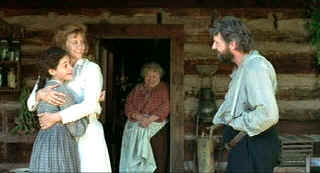

| Songcatcher (SE) /B+,B+ |
| Trimark/2000/112/ANA 1.85 |
Set in the 1907 Appalachian Mountains, a woman musicologist discovers the ballads of the mountain people are the purest forms of Scottish and English folk songs brought to this country by their ancestors. Lily Penleric is an independent woman teaching music at an Northeastern college. When Lily is once again passed over for full professorship, she sets out on a journey to deep into mountains to a school run by her sister. In the process of discovering the songs, Lily learns more about herself and is forever changed.
 |
| Lily finds her way. ©Trimark |
Writer/director Maggie Greenwald is a passionate storyteller. Not that she gets
wrapped up in a rush of overwrought emotions. She has a clear picture of her tale and delivers
it in eloquently uncluttered passages. Greenwald explores characters with affectionate wonder. Some of her mountain
people border on cliché, but in the end the rich portraits ring true to the material.
Greenwald casts with the eye of a master of Ikebana( Japanese flower
arrangement). Janet McTeer carries dignity on her shoulders like a supermodel balancing a
book atop her head. McTeer's strong central performance as Penleric anchors the film. Aidan Quinn is a
surprise as the complex hillbilly Tom Bledsoe. Quinn wears unwashed and unkempt naturally, but
the spark behind his eyes connotes more than surface dirt. Pat Carroll is a joy as grandma Viney
Butler. Young Emmy Rossum makes an incandescent screen debut as Deladis. It's hard to believe
Greenwald didn't pick this beautiful flower of an actress out of the wild mountain fields, but she
is just a gifted New Yorker. Supporting players including Jane Adams, Greg Cook, and Stephanie
Roth are as natural as the landscape.
The folk music is beautifully discovered and sung. David Mansfield's score
strokes the atmosphere with lovely notes. Young Rossum, a member of the New York Metropolitan Opera
Company, displays a intuitive affinity for the songs. Cinematography is exquisite. The mountain setting provides breathtaking vistas,
The film was shot in the North Carolina mountains in the actual historical settings.
Songcatcher lives splendidly on DVD. Verdant woodlands are
delivered in wonderfully saturated shades of green. Theatrical glow is preserved by the bright
transfer. Shadow detail is excellent. Skin tones are natural and varied and blacks are rendered
with velvet texture. A slight softness in a few scenes keeps this DVD from achieving reference
standards. Details of nature abound in the ambient space created by the Dolby Digital 5:1 surround.
The music is recorded with precious accuracy and detail.
Audio commentary by Maggie Greenwald and husband and co creative force David
Mansfield is informative and rich with background details.

Take a look at the merry images of America's gift to the movies: Hollywood Musical Posters are featured from The Movie Poster Archive.

Selections from the Feature Archive include articles on
Akira Kurosawa, Blonde Bimbos,
Frank
Darabont, Steven Culp,
John
Herzfeld or Vietnam: The
Hollywood Pariah, and many more....

The Academy of Motion Picture Arts
Sciences and has a soft spot reserved for peers taking on the battle of the bottle. Click on the
bottle to learn more about the magic of Oscar® Formula One.

 Have you visited Home Theater
Talk lately? One of the friendliest places on the Net for Home Theater and DVD discussion, you
can get help for installation problems or simply share your opinions with other Vidiots.
Have you visited Home Theater
Talk lately? One of the friendliest places on the Net for Home Theater and DVD discussion, you
can get help for installation problems or simply share your opinions with other Vidiots.

ISF Monitor Calibrations in the
Tristate New York area. Lots of hardware info and frequent hardware peaks from video expert Kevin
Miller. They may be judgmental, but that's the point, isn't it. Lots of DVD reviews plus news and
more.

Specializing in DVD reviews, DVD Authority boasts almost 400 reviews in an easy to use, elegant,
interface.

Comprehensive DVD review database. Easy to use
interface with specific region searches.